Abra o Roblox Studio e escolha BASEPLATE

Foto da tela.
Abra o Roblox Studio. Na tela que aparece, procure a fileira Abrir um modelo e clique no primeiro quadradinho, o Baseplate.
É o mundo mais vazio que existe: só um chão quadriculado. É isso que queremos.
- Não acho a fileira dos modelos
- Role a página para baixo, ou clique em Modelos na barra da esquerda.
- Abriu o projeto da aula passada
- Feche a aba dele no x e volte para o Início. Hoje é projeto novo.
- Apareceu uma janelinha de Boas-vindas por cima
- Clique em Voltar ao início, o botão da esquerda — ou no ✕ do canto. Não clique em Iniciar a introdução.
Prepare o editor (uma vez em cada computador)

Foto da tela.
Hoje você vai digitar código, e o Studio vem com duas ajudas que atrapalham quem está aprendendo: ele sugere linhas inteiras e fecha parênteses e aspas sozinho. Vamos desligar as duas.
No Windows: Arquivo → Configurações do Studio. No Mac: Roblox Studio → Configurações do Studio.
1. Na busca escreva assist e desmarque Ativar assistente de código.
2. Apague a busca, escreva fechamento e desmarque Colchetes de fechamento automáticos e Aspas de fechamento automáticas.
Feche a janela. Isso fica guardado — só precisa fazer uma vez.
- Não acho Configurações do Studio
- No Windows é o menu Arquivo, bem no canto de cima à esquerda da janela.
- A busca não acha nada
- Escreva só assist, sem acento e sem mais nada.
- Por que desligar?
- Ligado, o editor escreve linhas que você não pediu, e o Tab aceita a sugestão em vez de recuar. Desligado, o que está escrito na aula é exatamente o que você digita.
Abra a lista do mundo e vá para a aba MODELO
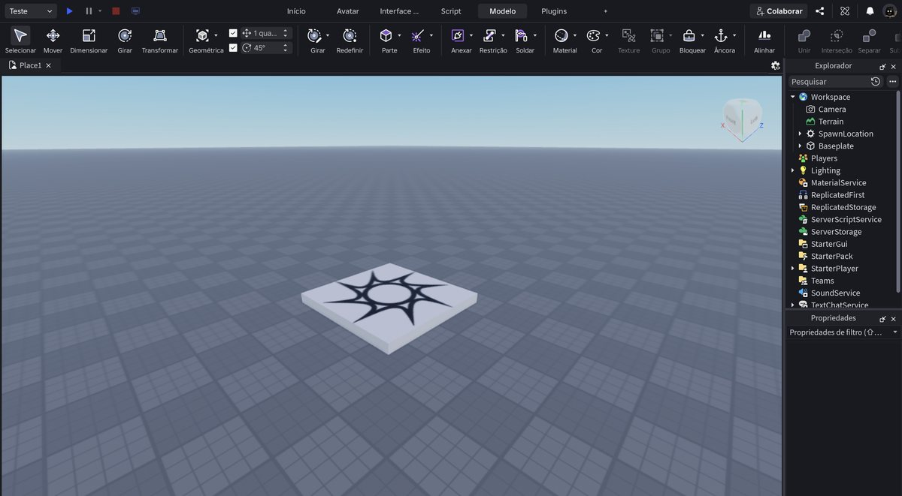
Foto da tela.
Na direita fica o Explorador — a lista de tudo que existe no seu mundo. Ela vem fechada: clique na setinha à esquerda de Workspace para abrir.
Depois, na linha de cima, clique na aba Modelo. Isto é obrigatório — cada aba mostra botões diferentes, e os desta aula só existem nela.
- Cliquei e a lista fechou de novo
- Você clicou duas vezes. Clique uma só.
- Não tenho o Explorador
- Aba Início, botão Explorador.
- Não acho a aba Modelo
- Ela fica entre Script e Plugins.
Crie a peça que vai virar lava
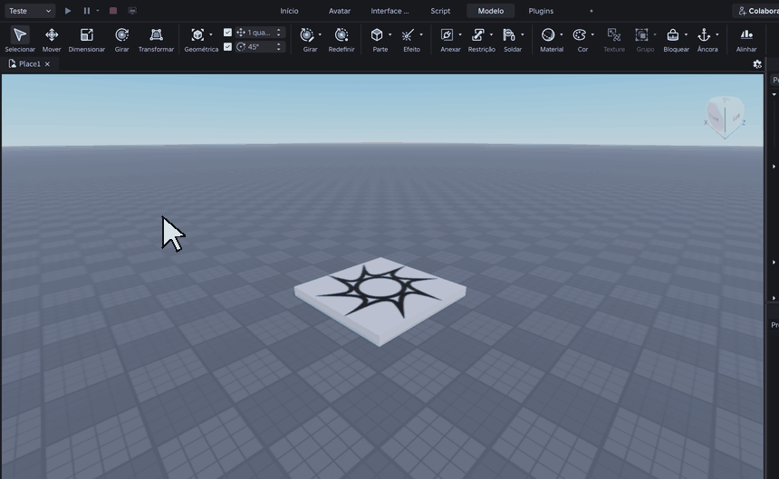
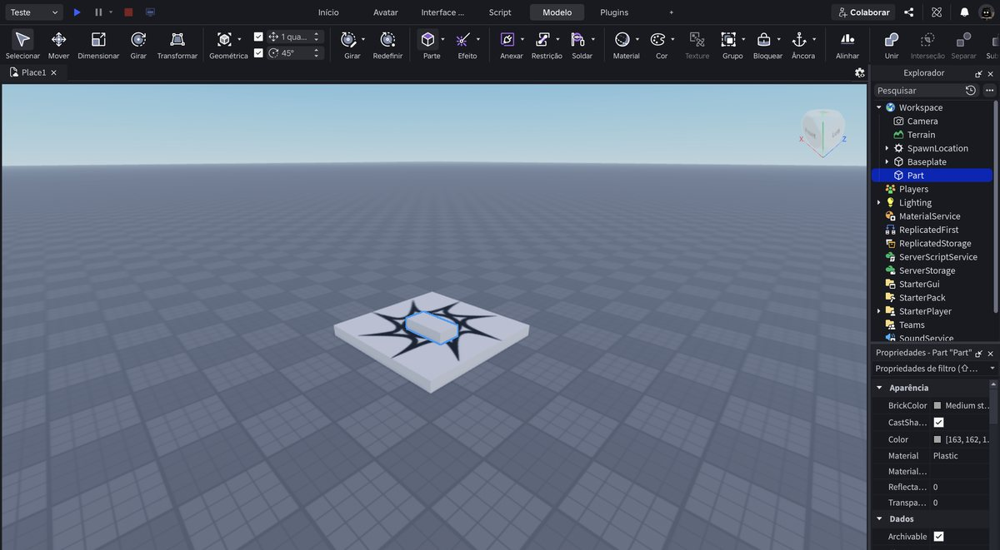
O clipe repete sozinho. Repare onde o cursor vai antes de clicar.
Foto da tela.
Clique em Parte — no desenho, não na palavra embaixo dele.
Clicar na palavra não faz absolutamente nada. É o erro mais comum.
- Cliquei e não aconteceu nada
- Você clicou na palavra. Clique no desenho acima dela.
- Apareceu Part na lista mas eu não vejo a peça
- É o próximo passo. Calma.
- Criei duas sem querer
- Aperte Ctrl + Z. Desfaz a última coisa.
Leve a câmera até a peça
Foto da tela.
Clique na palavra Part na lista da direita. Depois leve o mouse para cima do mundo 3D (o cinza grande) e aperte a tecla F — se o mouse ficar na lista, o F começa a renomear a peça em vez de mover a câmera.
A câmera voa até a peça. Depois use a tecla S algumas vezes para afastar um pouco — a peça fica grande demais logo depois do F.
- Apertei F e nada
- O mouse precisa estar em cima do mundo 3D quando você aperta F, não em cima da lista.
- A peça virou um nome escrito na lista
- Você apertou F com a lista selecionada e começou a renomear. Aperte Esc e tente de novo.
Ancore a peça
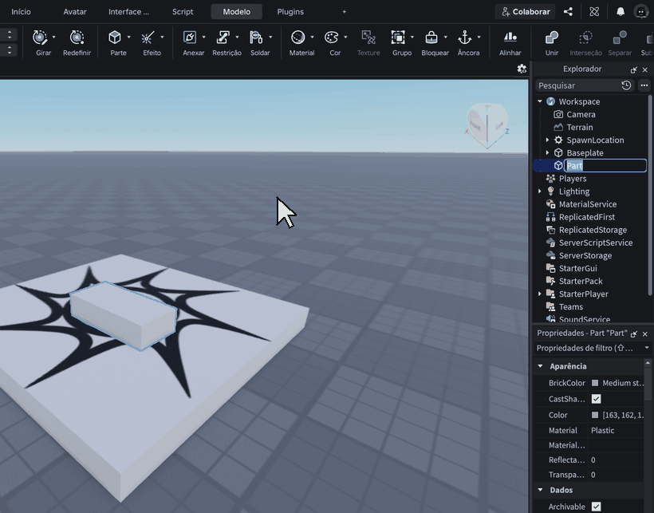
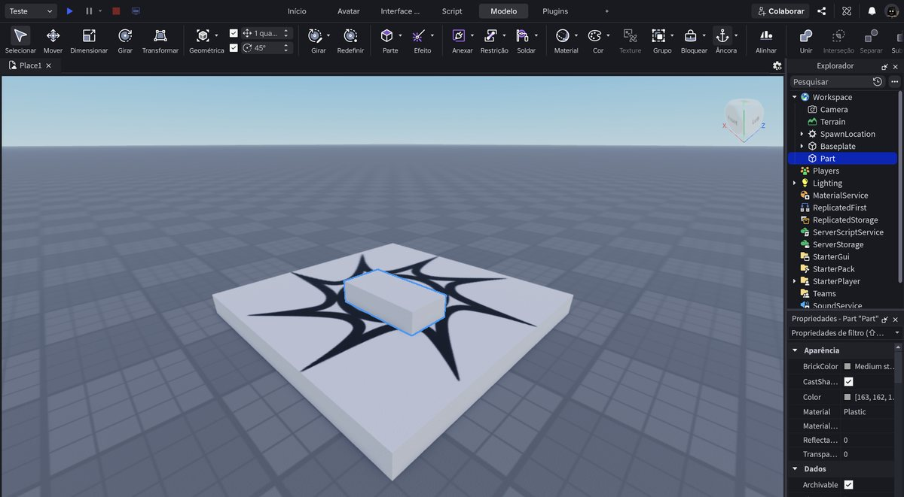
O clipe repete sozinho. Repare onde o cursor vai antes de clicar.
Foto da tela.
Com a peça ainda selecionada, clique em Âncora.
Âncora prende a peça no ar. Peça sem âncora despenca no segundo em que o jogo começa.
A regra do dia: criou, ancorou.
- Como sei se ancorou?
- Na lista de Propriedades, embaixo à direita, digite anchor na caixa de busca. A caixinha Anchored fica marcada.
- A peça não está selecionada
- Clique no nome Part na lista da direita. Selecionada = com borda azul em volta.
Pinte de vermelho
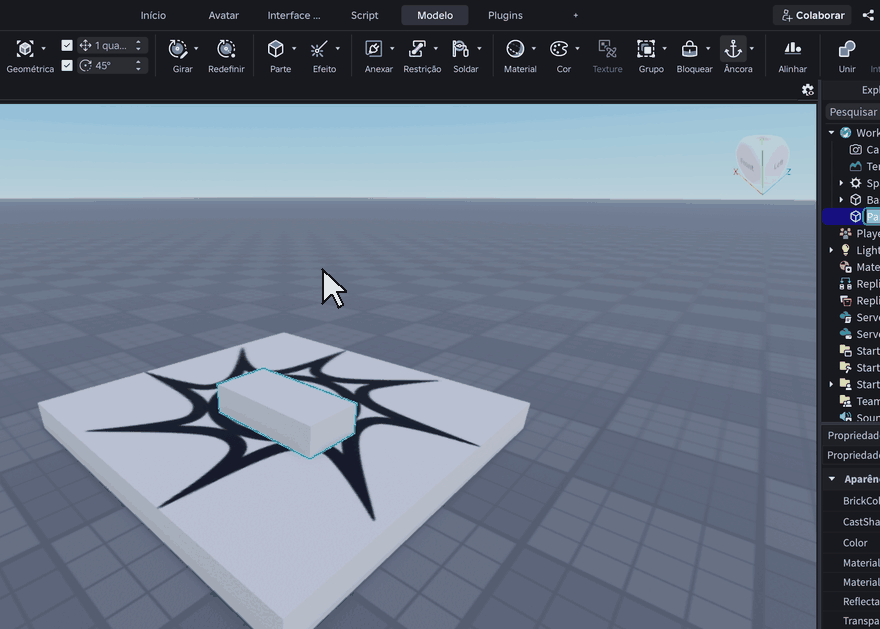
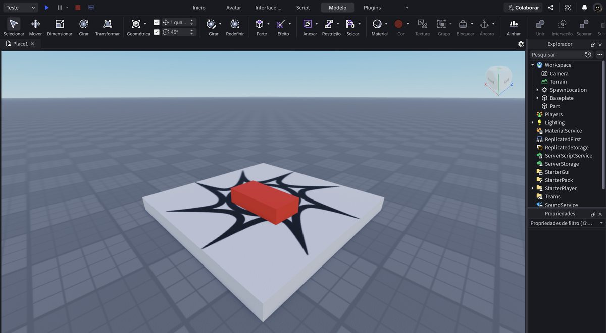
O clipe repete sozinho. Repare onde o cursor vai antes de clicar.
Foto da tela.
São três cliques, nesta ordem:
1. Clique na setinha ao lado do círculo colorido do botão Cor. Abre um painel de hexágonos.
2. Clique num hexágono vermelho. O painel fecha.
3. Clique no círculo do botão Cor. É esse clique que pinta.
- Escolhi a cor e a peça não mudou
- Falta o clique no círculo do botão Cor. Escolher no painel só separa a cor; quem pinta é o botão.
- Cliquei no círculo e mesmo assim não pinta
- No rodapé do painel de cores existe um interruptor “Clique no objeto para aplicar a cor”. Ele precisa ficar desligado (cinza).
- Pintou a peça errada
- Ctrl + Z, clique na peça certa e repita.
Deixe a lava brilhando
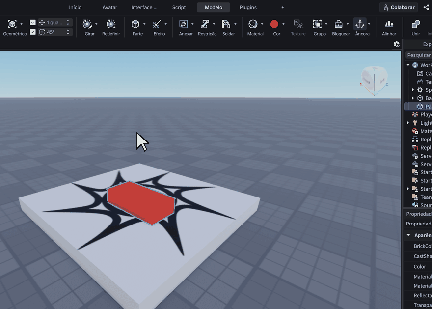
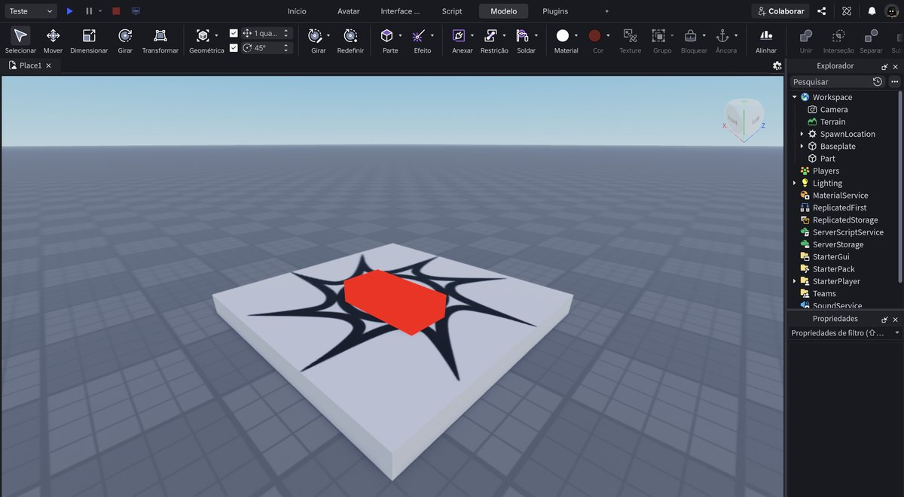
O clipe repete sozinho. Repare onde o cursor vai antes de clicar.
Foto da tela.
Clique na setinha ao lado do botão Material.
No alto do painel tem a caixa Pesquisar materiais. Clique dentro dela — fica com borda azul — e escreva neon. Sobra uma bolinha só. Clique nela.
- Escrevi e não filtrou nada
- A caixa já tinha texto guardado. Clique no ⊗ do lado direito para limpar e escreva de novo.
- Escrevi e a tela se mexeu sozinha
- A caixa não estava com o foco, então as letras foram para o mundo 3D (a letra e sobe a câmera). Clique dentro da caixa, veja a borda azul, e só então escreva.
Dê o nome de LAVA para a peça
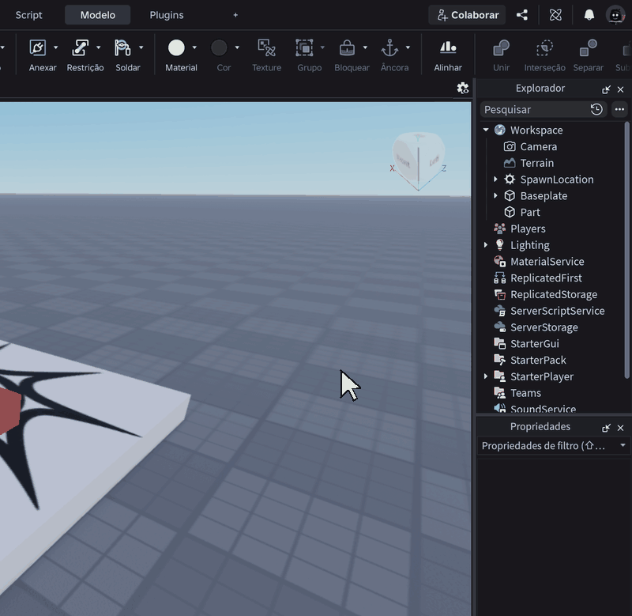
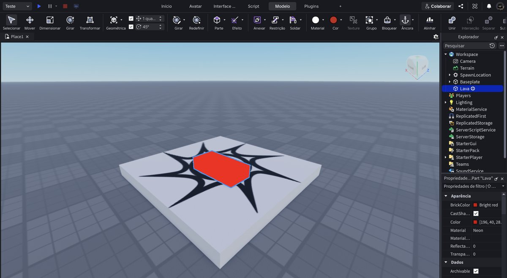
O clipe repete sozinho. Repare onde o cursor vai antes de clicar.
Foto da tela.
Na lista da direita, clique com o botão direito em cima de Part e escolha Renomear.
Escreva Lava e aperte Enter.
O nome não muda nada no jogo — muda tudo para você, que daqui a pouco vai ter várias peças.
- O nome voltou para Part
- Você apertou Esc em vez de Enter. Repita e termine com Enter.
- Escrevi errado
- Botão direito no nome, Renomear de novo.
Coloque um SCRIPT dentro da lava
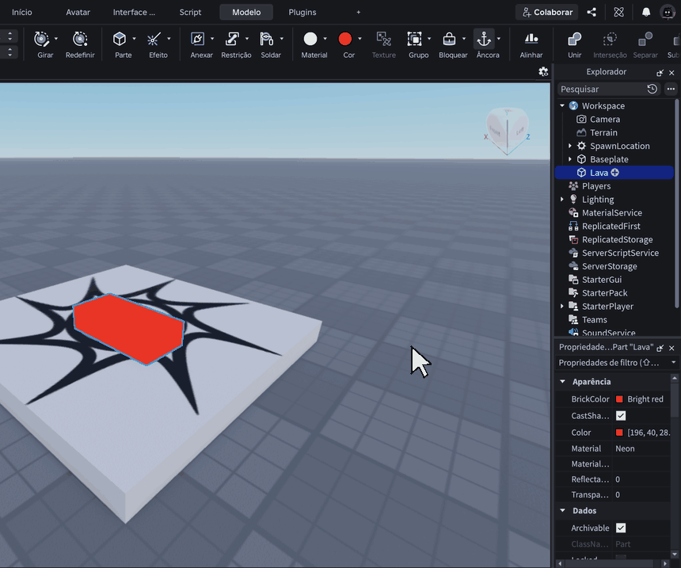
O clipe repete sozinho. Repare onde o cursor vai antes de clicar.
Foto da tela.
Clique uma vez em Lava na lista. Aparece um + logo depois do nome. Clique nesse +.
Abre uma listinha. Clique em Script.
Um script é um papel com instruções. O Roblox lê esse papel e faz o que está escrito.
- O Script apareceu fora da Lava
- Ele precisa estar dentro dela. Arraste o Script por cima da palavra Lava na lista, ou apague e refaça com a Lava selecionada.
- Não aparece o +
- Clique uma vez na linha da Lava primeiro. O + só aparece na linha selecionada.
- Entrou outra coisa (Decal, Folder…)
- Você clicou no item errado da listinha. Apague com Delete e faça de novo.
Olhe o que veio escrito
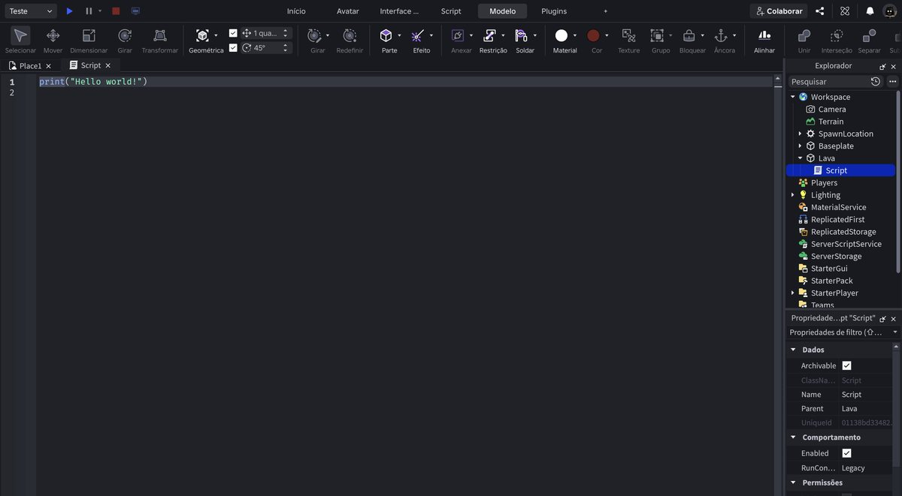
Foto da tela.
Todo script novo já vem com uma linha pronta:
print("Hello world!")
Isso só escreve um texto para o programador ver. Não serve para nós.
Apague essa linha inteira. Clique no fim dela e segure Backspace até a linha 1 ficar vazia.
- Apaguei demais e sumiu tudo
- Tudo bem — era para ficar vazio mesmo.
- Não acho a tela do script
- Lá em cima, do lado da aba Place1, tem outra aba escrita Script. Clique nela.
Escreva a primeira linha
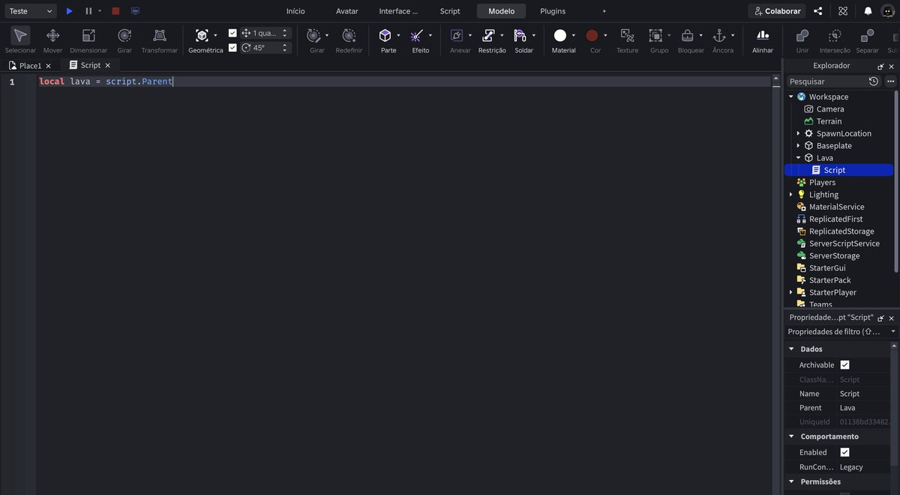
Foto da tela.
Escreva exatamente isto na linha 1:
- local lava = script.Parent
O que essa linha faz: ela dá o apelido lava para a peça onde o script mora. script.Parent quer dizer “a peça que está segurando este papel”.
Daqui para a frente, escrever lava é a mesma coisa que escrever “a peça vermelha”.
- Apareceu um risco vermelho
- Alguma letra está errada. Confira: l minúsculo em local, ponto entre script e Parent, P maiúsculo em Parent.
- O editor completou sozinho
- O Studio sugere palavras enquanto você digita. Aperte Esc para dispensar a sugestão e continue.
- Apareceu uma caixinha cinza com sugestões
- É o editor tentando adivinhar. Aperte Esc para fechá-la e continue digitando. Se você apertar Enter com ela aberta, ele escreve a sugestão no lugar do que você ia escrever.
Escreva o resto do código
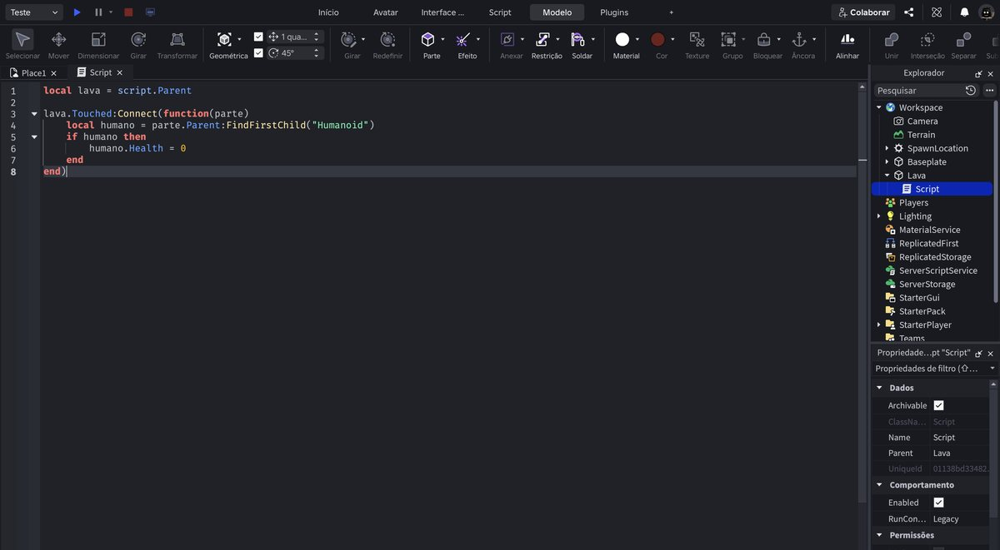
Foto da tela.
Pule uma linha e escreva o resto. O código inteiro fica assim:
- local lava = script.Parent
- lava.Touched:Connect(function(parte)
- local humano = parte.Parent:FindFirstChild("Humanoid")
- if humano then
- humano.Health = 0
- end
- end)
"I sai Ï).Duas coisas que economizam briga:
Não digite os dois end do fim — estão em cinza porque o editor escreve sozinho, no instante em que você aperta Enter depois da linha do function( e depois da linha do then.
Não aperte Tab. O editor já empurra as linhas para dentro sozinho.
- Sobraram end a mais
- Você digitou os que o editor já tinha escrito. Apague os extras até sobrar um end e um end).
- Apertei Tab e apareceu código que eu não escrevi
- Era a sugestão do assistente. Ctrl + Z para desfazer, e refaça o passo 2 desta aula.
- Risco vermelho no fim
- Conte os fechamentos: um end para o if e um end) para o function.
- Escrevi Humanoid errado
- Tem que ser exatamente "Humanoid", com H maiúsculo e entre aspas.
- Apareceu uma caixinha cinza com sugestões
- É o editor tentando adivinhar. Aperte Esc para fechá-la e continue digitando. Se você apertar Enter com ela aberta, ele escreve a sugestão no lugar do que você ia escrever.
- A aspa saiu errada (Ï, ä, ou duas aspas juntas)
- A aspa do teclado brasileiro é tecla muda. Antes de vogal ela vira trema; no fim da linha ela às vezes dobra. O conserto é sempre o mesmo: apague o que saiu errado e digite a aspa seguida da barra de espaço. Sai uma aspa limpa, sem espaço.
Entenda o que você escreveu
Foto da tela.
Leia em voz alta, linha por linha:
lava.Touched:Connect(...) — “quando alguém encostar na lava, faça isto”.
function(parte) — “isto” começa aqui. parte é o pedaço que encostou (um pé, uma mão).
parte.Parent:FindFirstChild("Humanoid") — “procure, no dono desse pedaço, uma coisa chamada Humanoid”. Humanoid é o que faz um boneco ser um boneco vivo.
if humano then — “se achou mesmo um boneco…”
humano.Health = 0 — “…a vida dele vira zero”.
Essa procura existe por um motivo: se uma pedra cair na lava, não tem Humanoid nenhum, e o código não quebra.
- Não entendi o Parent
- Parent é “quem está segurando”. O pé está dentro do boneco: o Parent do pé é o boneco.
- Por que não é só parte.Health = 0?
- Porque quem tem vida é o boneco inteiro, não o pé.
Volte para o mundo
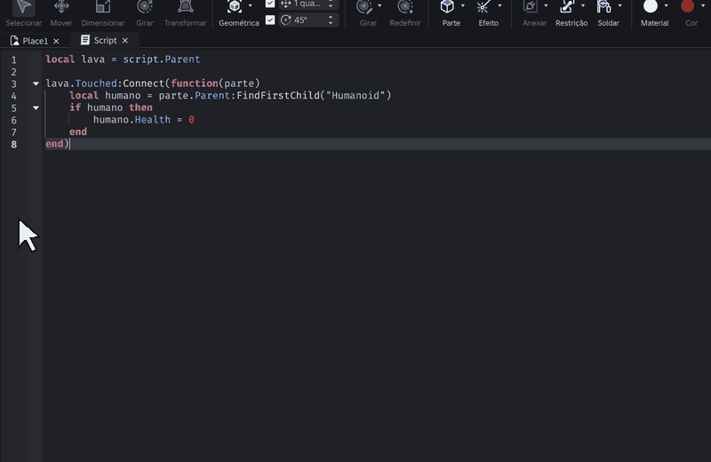
O clipe repete sozinho. Repare onde o cursor vai antes de clicar.
Foto da tela.
Lá em cima, do lado esquerdo, existem duas abas: Place1 e Script.
Clique em Place1 para voltar a ver o mundo 3D. O script continua lá, salvo, mesmo com a aba fechada.
- Fechei a aba do Script sem querer
- Não perdeu nada. Clique duas vezes em Script na lista da direita para abrir de novo.
Jogue
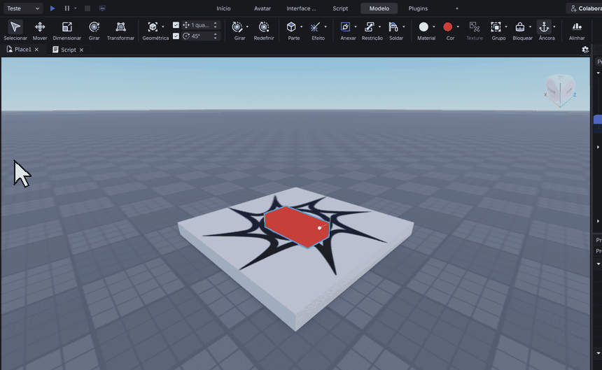
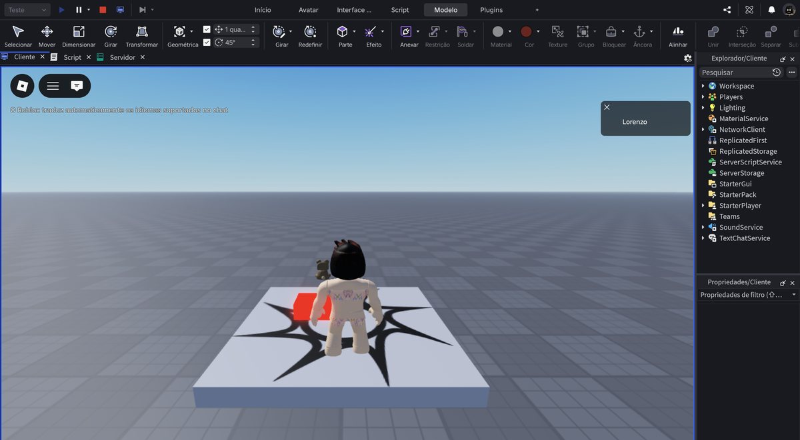
O clipe repete sozinho. Repare onde o cursor vai antes de clicar.
Foto da tela.
Aperte o ▶ azul, no canto superior esquerdo.
O Studio vira o jogo: nasce um boneco e você anda com W A S D, pula com espaço.
- Não acho o botão ▶
- É o triângulo azul no alto à esquerda, ao lado da palavra Teste. Não é a palavra Teste — é o triângulo.
- Demora muito
- Na primeira vez leva uns 10 segundos. É normal.
Encoste na lava
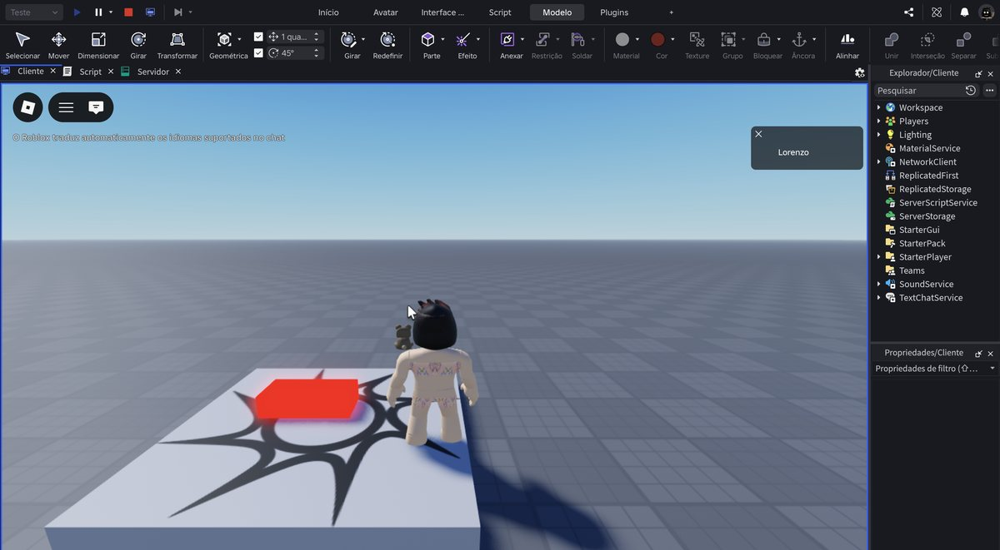
Foto da tela.
Ande com W até pisar na peça vermelha.
No instante em que o seu pé encosta, o boneco morre e nasce de novo.
- Encostei e não morri
- Três coisas para conferir, nessa ordem: 1) o Script está dentro da Lava na lista? 2) sobrou algum risco vermelho no código? 3) você parou o jogo e voltou a jogar depois de escrever o código?
- Morri antes de encostar
- Você nasceu em cima da lava. Pare o jogo, arraste a lava para longe da plataforma clara e jogue de novo.
- O boneco não anda
- Clique uma vez dentro da tela do jogo antes de usar W A S D.
Pare o jogo
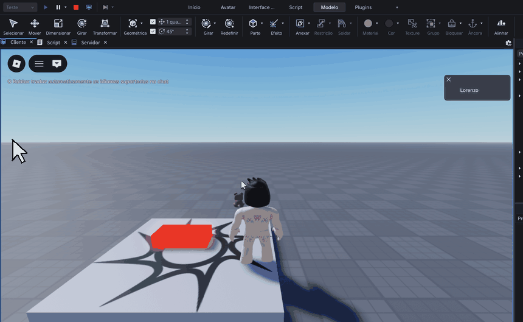
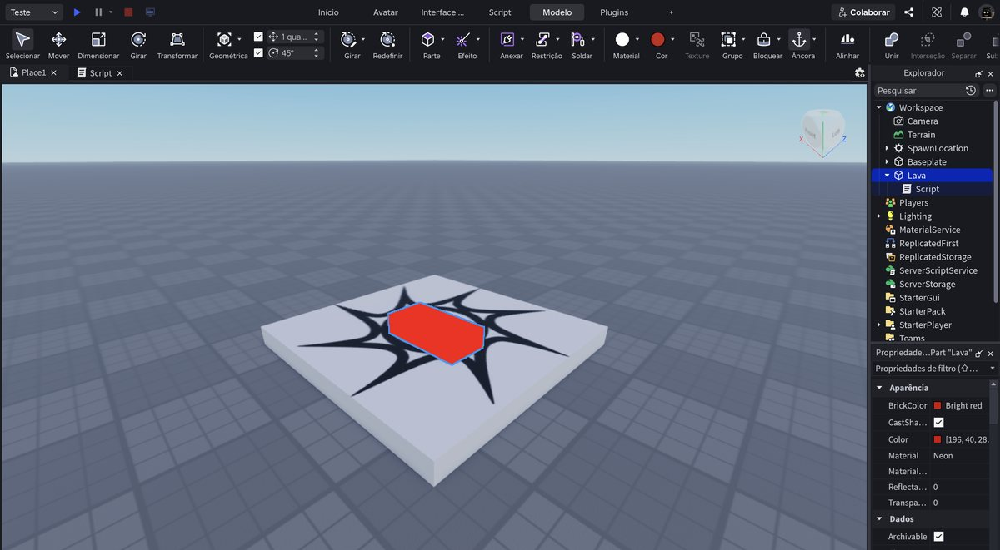
O clipe repete sozinho. Repare onde o cursor vai antes de clicar.
Foto da tela.
Aperte o quadrado vermelho, do lado do ▶.
Isto é importante: tudo o que você construir com o jogo rodando some quando o jogo para. Só vale o que você faz com o jogo parado.
- Continuo no jogo
- Aperte o quadrado vermelho, não o ▶.
- Sumiu a minha lava!
- Você a criou com o jogo rodando. Refaça com o jogo parado — é a regra que mais pega gente.
Salve
Foto da tela.
Aperte Ctrl + S. Ele pergunta onde salvar: escolha Salvar em arquivo e dê o nome lava.
Guarde numa pasta que você lembre. Na próxima aula começamos outro projeto do zero, mas este é seu.
- Pediu para publicar na Roblox
- Escolha Salvar em arquivo, não “Salvar na Roblox”. Publicar é assunto da Aula 4.
- Não sei onde salvei
- Salve de novo em Área de Trabalho. Fica fácil de achar.